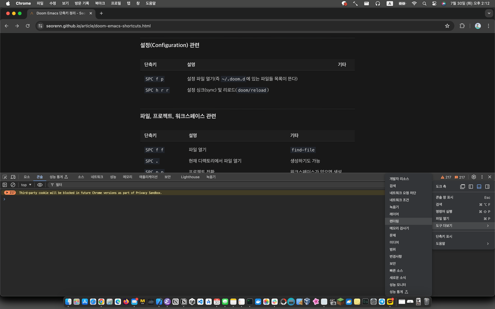
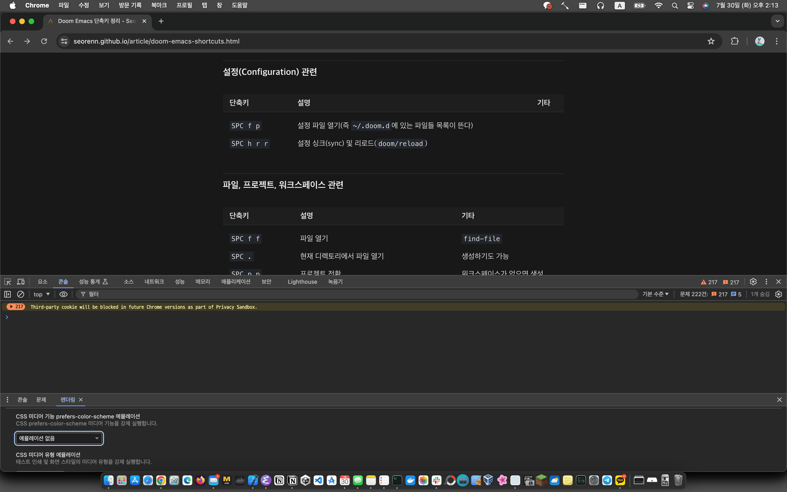
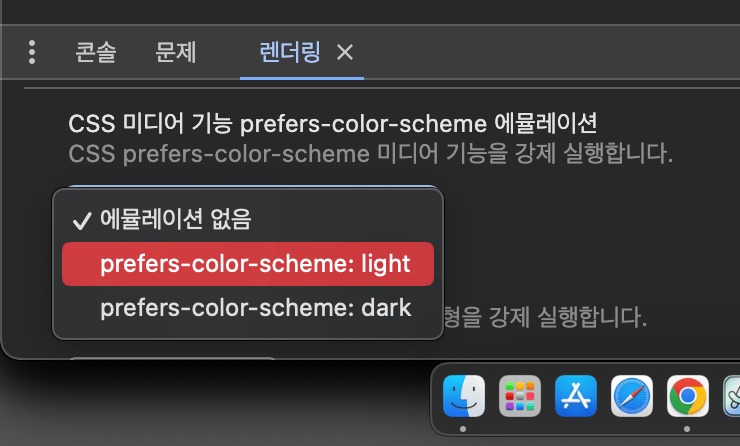
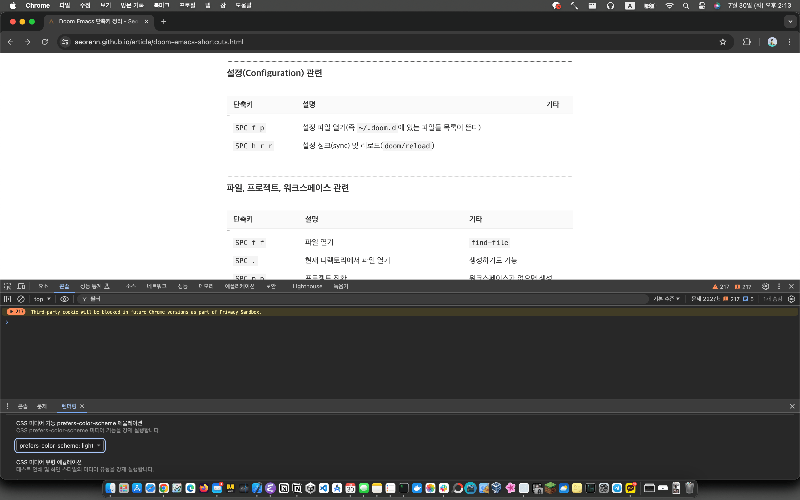

크롬에서 다크 모드 혹은 라이트 모드 시험해 보기
웹 페이지에서 CSS를 통해 다크 모드 혹은 라이트 모드를 지원하려 할 때는 물론 시스템의 설정을 바꿔서 간단하게 보면서 개발할 수는 있다. 하지만 웹 브라우저를 떠나서 계속 바꾸는 계 귀찮거나 시스템에 무리를 줄 가능성은 충분히 있다. 그래서 구글 크롬에서 이 다크 모드 혹은 라이트 모드를 쉽게 바꿔서 시험해 볼 수 있는 기능이 있나 찾아봤고 실제로 존재하기에 그 방법을 정리해 본다.
참고로 이 글은 macOS에서 다크 모드를 설정해 둔 상태로 라이트 모드의 CSS를 테스트 해보려는 상황을 가정하고 있다.
크롬에서 다크 모드 혹은 라이트 모드 시험해 보기
우선 크롬 개발자 도구에서 '렌더링' 도구를 표시해야 한다. macOS 기준으로 크롬에서 개발자 도구를 열고 개발자 도구 메뉴에서 '도구 더보기 - 렌더링'을 선택하면 된다.
 크롬 개발자 도구에서 렌더링 도구를 추가하는 화면
이렇게 하면 렌더링 도구 페이지가 뜬다. 이 페이지에서 스크롤을 내리다 보면 'CSS 미디어 기능 prefers-color-scheme 에뮬레이션' 항목을 찾을 수 있다.
 CSS 미디어 기능 prefers-color-scheme 에뮬레이션
아마도 별 다른 설정이 없는 한 드롭박스 버튼에 '에뮬레이션 없음'이 표시되어 있을 것이다. 이 드롭박스 버튼을 눌러보면 뭘 어떻게 해야 하는지 바로 알 수 있을 것이다.
 컬러 스킴 선택 화면
이렇게 다크 모드 혹은 라이트 모드 등 원하는 모드로 바로 에뮬레이션 할 수 있게 되었다.
 라이트 모드로 설정한 상태
사족
컬러 스킴을 바꾸는 과정은 그다지 어렵거나 힘들진 않다. 하지만 좀 더 쉽게 할 수 있게 컬러 스킴 관련 부분만 접근성 좋은 위치에 배치해 줬으면 하는 바램도 없지는 않다. 안 그래도 렌더링 도구가 제법 크기를 잡아먹기 때문에 필요할 때마다 꺼내 쓰는 것도 좀 귀찮은 일인 것 같으니 말이다.